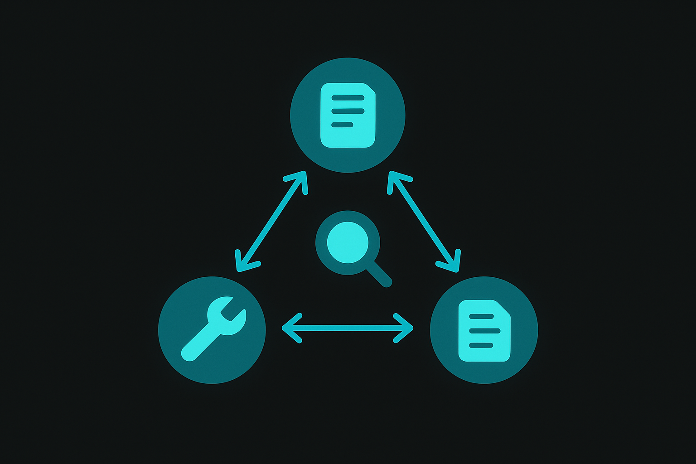
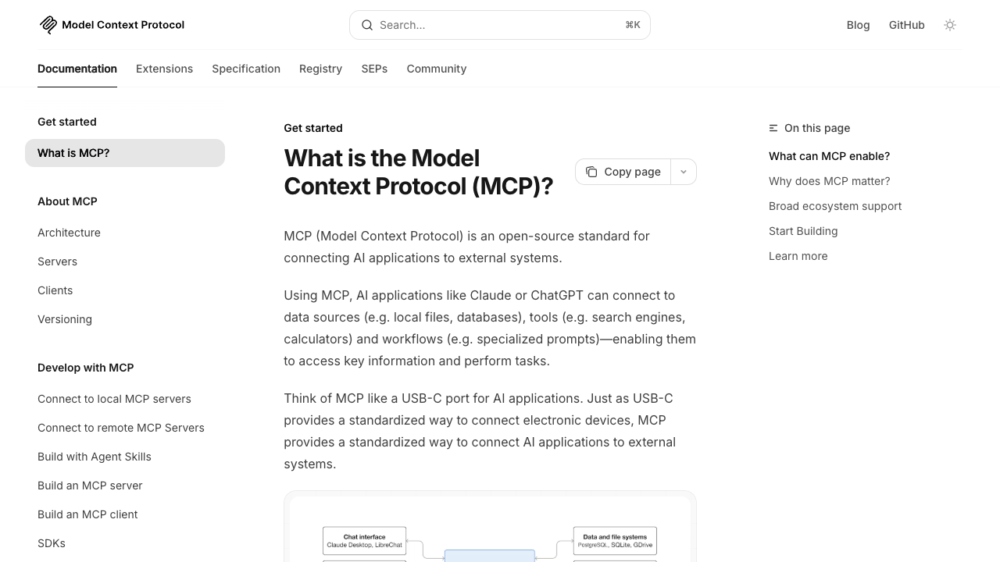

Course 13 / Layer 2 -- 技術特化
MCP / A2A AIエージェント開発AIエージェントがツールを使い、他のエージェントと協調して自律的にタスクを遂行する仕組みを構築します。MCP(Model Context Protocol)によるツール連携、A2A(Agent-to-Agent)によるエージェント間通信、Claude Agent SDKによる本格開発まで。MCP/A2A特化の日本語コースは他にありません。
中級-上級 約10時間(600分) 9 Sections + 2 Review ハンズオン比率 66% 理解度クイズ付き
Section 01 -- 50min(講義30 + ハンズオン20)
AIエージェントとは

エージェントの定義
AIエージェントとは、与えられた目標に対して自律的に行動を計画し、ツールを使い、結果を観察して次の行動を決めるAIシステムのことです。チャットボットとの決定的な違いは「1回の質問に1回答える」のではなく「ゴールに到達するまでループを回す」点にあります。
ファイルを検索してデータベースに書き込み、結果をSlackに通知する。この一連の流れを人間の介入なしにこなせるのがエージェントです。従来のチャットAIは「質問→回答」の1往復で完結していました。エージェントはそこに「判断→行動→観察」のサイクルを加え、複数ステップのタスクを自力で遂行します。
エージェントの構成要素
エージェントは4つのコンポーネントで構成されます。LLMが頭脳、Toolsが手足、Memoryが記憶、Planningが計画立案。どれが欠けてもエージェントとして機能しません。
%%{init:{'theme':'dark','themeVariables':{'primaryColor':'#00A5BF','primaryBorderColor':'#007A8F','primaryTextColor':'#e8e8e8','lineColor':'#00A5BF','secondaryColor':'#1a1a1a','background':'#141414','mainBkg':'#1a1a1a','nodeBorder':'#00A5BF'}}}%%
graph TB
U["ユーザーの指示"] --> P["Planning エージェントの4コンポーネント: LLM + Tools + Memory + Planning
コンポーネント 役割 具体例
LLM(推論) 状況判断、次のアクション決定 Claude, GPT-4o, Gemini Tools(行動) 外部システムへの操作 ファイル読み書き、API呼出し、DB検索 Memory(記憶) 過去の会話・結果の保持 コンテキストウィンドウ、外部ストレージ Planning(計画) ゴールからの逆算、タスク分解 ReActパターン、ツリー探索
ReActパターン
エージェントの思考ループとして広く使われているのがReAct(Reasoning + Acting)パターンです。LLMがまず推論(Thought)を行い、次に行動(Action)を選択し、その結果を観察(Observation)する。この3ステップを目標達成まで繰り返します。
%%{init:{'theme':'dark','themeVariables':{'primaryColor':'#00A5BF','primaryBorderColor':'#007A8F','primaryTextColor':'#e8e8e8','lineColor':'#00A5BF','secondaryColor':'#1a1a1a','background':'#141414','mainBkg':'#1a1a1a','nodeBorder':'#00A5BF'}}}%%
graph LR
T["Thought ReActループ: 推論 → 行動 → 観察 を繰り返す
ReActの具体例: 天気に応じた服装提案
ユーザーが「明日の東京の天気に合った服装を提案して」と依頼した場合のReActループ:
Thought 1: 明日の東京の天気を調べる必要がある。天気APIツールを使おう。
Action 1: get_weather(location="Tokyo", date="tomorrow")
Observation 1: 最高気温28度、晴れ時々曇り、降水確率20%
Thought 2: 28度で晴れ。軽装で良いが、念のため薄手の上着も提案すべき。最終回答を作成する。
Final Answer: 明日の東京は最高28度の晴れ予報です。半袖+薄手のカーディガンをお勧めします。
エージェントの応用例
カスタマーサポート自動化 問い合わせ内容を分類し、FAQから回答を検索。解決できない場合は自動でチケットを起票してエスカレーション。
コード生成・レビュー 仕様書を読み取り、コードを生成し、テストを実行し、失敗したら自力でデバッグ。Claude CodeやCursor Agentがこのパターン。
データ分析 CSVを読み込み、統計処理を行い、グラフを描画し、要約レポートを生成する。Code Interpreterの発展形。
調査レポート 複数のWebソースを検索・要約し、整合性をチェックした上で構造化レポートとして出力。Deep Researchがこの代表例。
ハンズオン: エージェント動作の体験 20min
目標: Claude/ChatGPTのツール利用機能でエージェント的な動作を体験し、従来のチャットとの違いを実感する
パート1: ChatGPTのCode Interpreterでエージェント動作を観察(10min)
ChatGPT(GPT-4o)を開き、以下のプロンプトを送信してください
以下のデータをCSVとして生成し、分析してください。
商品名,売上(万円),前月比(%)
商品A,520,105
商品B,180,92
商品C,340,118
商品D,90,78
商品E,410,101
分析してほしいこと:
1. 売上降順でソートした表
2. 前月比が100%未満の商品を警告付きでリスト
3. 棒グラフの作成
4. 3行の要約コメントコピー
ChatGPTがPythonコードを生成→実行→結果確認→次のステップへ進む様子を観察してください。これがReActループの実例です
パート2: Claudeのツール利用を観察(10min)
Claude(claude.ai)を開き、Artifactsがオンになっていることを確認してください
以下のプロンプトを送信してください
以下の要件でインタラクティブなダッシュボードを作ってください。
データ:
- 月次売上: 1月520万、2月490万、3月610万、4月580万
- 目標: 月550万
要件:
- 棒グラフで月次売上を表示
- 目標ラインを赤の点線で表示
- 各月をクリックすると詳細がポップアップ
- 達成/未達を色分け(達成=浅葱色、未達=グレー)コピー
Claudeがコードを生成し、Artifactとしてプレビューを表示する流れを確認してください
ChatGPTとClaudeのアプローチの違い(Pythonコード実行 vs Artifact生成)を比較してみてください
観察ポイント
ChatGPTはCode Interpreterでサーバーサイド実行し、画像やファイルとして結果を返します。Claudeはフロントエンドで動くHTML/JS/Reactを生成し、ブラウザ上でインタラクティブに動くアプリケーションを返します。どちらもエージェント的な動作ですが、ツールの性質が異なるため出力の形も変わります。
Section 02 -- 60min(講義25 + ハンズオン35)
MCP -- MCPサーバー構築とツール定義

MCP公式サイト(modelcontextprotocol.io) -- 仕様書、チュートリアル、SDK、サーバー一覧が揃っている
MCPとは
MCP(Model Context Protocol)は、Anthropicが2024年11月に公開したAIツール連携の標準プロトコルです。LLMが外部ツールやデータにアクセスする際の「共通言語」を定めたもので、USB-Cのように1つの規格でさまざまなツールとつながります。
MCP以前は、各AIプラットフォームがそれぞれ独自のツール連携方式を持っていました。OpenAIのFunction Calling、AnthropicのTool Use、GoogleのFunction Callingは微妙に仕様が違い、開発者は各プラットフォーム向けに個別実装を強いられていた。MCPはその統一規格として登場し、一度作ったサーバーをClaude Desktop、Claude Code、VS Code、Cursor、n8nなど複数のホストから使い回せるようにしました。
MCPアーキテクチャ
%%{init:{'theme':'dark','themeVariables':{'primaryColor':'#00A5BF','primaryBorderColor':'#007A8F','primaryTextColor':'#e8e8e8','lineColor':'#00A5BF','secondaryColor':'#1a1a1a','background':'#141414','mainBkg':'#1a1a1a','nodeBorder':'#00A5BF'}}}%%
graph LR
H["Host MCPアーキテクチャ: Host → Client → Server → External Resource
レイヤー 役割 具体例
Host ユーザーとLLMの接点 Claude Desktop, Claude Code, Cursor MCP Client サーバーとの通信管理 Host内部に組み込まれている MCP Server ツール・リソースの提供 自作サーバー、公式サーバー群 External Resource 実際のデータ・システム API、DB、ファイルシステム
MCPの3つの機能
Tools(ツール実行) LLMが関数として呼び出せるアクション。天気取得、DB検索、ファイル作成など。MCPの最も基本的な機能で、このコースの主軸です。
Resources(データ読取) LLMが読み取れるデータソース。ファイル内容、API応答、ログなど。ツールと違い「データを返すだけ」で外部に副作用を起こしません。
Prompts(テンプレート) 再利用可能なプロンプトテンプレート。ユーザーがスラッシュコマンドのように呼び出せます。例: /summarize で要約テンプレートを呼び出す。
公開MCPサーバー -- 人気Top10
公式リポジトリ には、すぐに使えるMCPサーバーが多数公開されています。自作する前に、既存のサーバーで要件を満たせないか確認してください。
# サーバー名 機能 利用場面
1 filesystem ローカルファイルの読み書き・検索 コード生成時のファイル操作、ドキュメント参照 2 github リポジトリ操作、Issue/PR管理 開発ワークフロー自動化、コードレビュー支援 3 postgres PostgreSQLのクエリ実行・スキーマ取得 DB分析、データ抽出、SQLデバッグ 4 slack メッセージ送信・チャンネル管理 通知自動化、チャンネル要約 5 google-drive Drive内ファイルの検索・読取 社内ドキュメント検索、RAGのデータソース 6 brave-search Web検索(Brave Search API) 最新情報の取得、ファクトチェック 7 puppeteer ブラウザ自動操作、スクレイピング Web UI テスト、データ収集 8 sqlite SQLiteのDB操作 ローカルDB分析、プロトタイプ開発 9 memory 永続的なキーバリュー記憶 会話履歴の保持、ユーザー設定の記憶 10 fetch HTTP リクエスト送信 外部API呼出し、Webhook連携
これらはnpx -y @modelcontextprotocol/server-[名前] の形式でインストールできるものが多く、claude_desktop_config.jsonに数行追記するだけで使い始められます。
TypeScript SDKでMCPサーバーを自作する
MCPサーバーの実装は驚くほどシンプルです。@modelcontextprotocol/sdk パッケージをインストールし、server.tool() でツールを定義するだけ。以下が最小構成のコードです。
// weather-server.ts -- 天気情報取得MCPサーバー
import { McpServer } from "@modelcontextprotocol/sdk/server/mcp.js";
import { StdioServerTransport } from "@modelcontextprotocol/sdk/server/stdio.js";
import { z } from "zod";
// サーバーインスタンス生成
const server = new McpServer({
name: "weather-server",
version: "1.0.0",
});
// ツール定義: get_weather
server.tool(
"get_weather", // ツール名
"指定都市の天気情報を取得します", // 説明文(LLMがツール選択時に参照)
{
city: z.string().describe("都市名(例: Tokyo, Osaka)"),
units: z.enum(["celsius", "fahrenheit"]).default("celsius")
.describe("温度単位"),
},
async ({ city, units }) => {
// ここで実際の天気APIを呼ぶ(例ではモックデータ)
const weatherData = {
city,
temperature: units === "celsius" ? 22 : 72,
condition: "晴れ",
humidity: 45,
};
return {
content: [{
type: "text",
text: JSON.stringify(weatherData, null, 2),
}],
};
}
);
// stdioトランスポートで起動
const transport = new StdioServerTransport();
await server.connect(transport);
console.error("Weather MCP Server running on stdio");コピー
コードのポイント
McpServer -- サーバーの中核。name/versionはAgent Cardとして使われるserver.tool() -- 第1引数がツール名、第2引数がLLM向け説明、第3引数がinputSchema(Zodで定義)、第4引数がhandler関数Zod -- inputSchemaの定義にZodを使う。.describe()でパラメータの説明を付与するとLLMの精度が上がるStdioServerTransport -- stdin/stdoutで通信。Claude DesktopやClaude Codeとの接続に最適
Tips: ツール説明文がLLMの精度を決める
server.tool()の第2引数(説明文)とZodスキーマの.describe()は、LLMがどのツールをいつ使うか判断する際の手がかりになります。曖昧な説明だとLLMは正しくツールを選べません。「天気を返す」ではなく「指定都市の現在の天気情報(気温、天候、湿度)をJSON形式で取得します」のように具体的に書いてください。
package.jsonの設定
{
"name": "weather-mcp-server",
"version": "1.0.0",
"type": "module",
"scripts": {
"build": "tsc",
"start": "node dist/index.js"
},
"dependencies": {
"@modelcontextprotocol/sdk": "^1.12.0",
"zod": "^3.24.0"
},
"devDependencies": {
"typescript": "^5.7.0",
"@types/node": "^22.0.0"
}
}コピー
ハンズオン: カスタムMCPサーバー構築 35min
目標: TypeScript SDKで天気情報MCPサーバーを構築し、MCP Inspectorでテストする
Step 1: プロジェクト作成(5min)
# プロジェクトディレクトリ作成
mkdir weather-mcp-server && cd weather-mcp-server
# package.json初期化
npm init -y
# 依存パッケージインストール
npm install @modelcontextprotocol/sdk zod
npm install -D typescript @types/node
# TypeScript設定
npx tsc --init --target es2022 --module nodenext --moduleResolution nodenext --outDir dist
# package.jsonに "type": "module" を追加
# (手動でpackage.jsonを編集してください)コピー
Step 2: サーバーコード作成(10min)
src/index.ts を作成し、上記のweather-server.tsの内容を記述してください。余裕がある方は以下の拡張に挑戦してみてください:
get_forecast ツールを追加(3日間の天気予報を返す)
都市名のバリデーションを追加(Tokyo, Osaka, Nagoya等の限定リスト)
Step 3: ビルドとテスト(10min)
# TypeScriptビルド
npx tsc
# MCP Inspectorで動作確認
npx @modelcontextprotocol/inspector node dist/index.js
MCP Inspectorが起動したら、ブラウザで表示されるUIからget_weatherツールを実行し、レスポンスを確認してください。
Step 4: ツールの追加(10min)
もう1つのツール get_forecast を追加してください。
// get_forecast ツールを追加
server.tool(
"get_forecast",
"指定都市の3日間天気予報を取得します",
{
city: z.string().describe("都市名"),
days: z.number().min(1).max(7).default(3).describe("予報日数"),
},
async ({ city, days }) => {
const forecast = Array.from({ length: days }, (_, i) => ({
date: new Date(Date.now() + (i + 1) * 86400000)
.toISOString().split("T")[0],
city,
temperature: Math.round(18 + Math.random() * 12),
condition: ["晴れ", "曇り", "雨"][Math.floor(Math.random() * 3)],
}));
return {
content: [{
type: "text",
text: JSON.stringify(forecast, null, 2),
}],
};
}
);コピー
うまくいかない場合のチェックリスト
tsconfig.json の module が "nodenext" になっているか確認してください。ESModuleのimport文に .js 拡張子が必要な場合があります。
package.jsonに "type": "module" が入っているか確認してください。
npx tsc でビルドエラーが出る場合はTypeScriptのバージョンを5.7以上に更新してください。
自走チャレンジ: MCPサーバーを自力で構築する
ここで7分間、手を動かしてください
講師が天気情報ツールを作ったのと同じSDKで、以下のMCPサーバーを自力で構築してください。「指定されたテキストの文字数・単語数・行数をカウントして返すツール」。inputSchemaの設計から始めてください。
解答例と解説を見る
import { McpServer } from "@modelcontextprotocol/sdk/server/mcp.js";
import { StdioServerTransport } from "@modelcontextprotocol/sdk/server/stdio.js";
import { z } from "zod";
const server = new McpServer({
name: "text-counter",
version: "1.0.0",
});
server.tool(
"count_text",
"テキストの文字数・単語数・行数をカウントする",
{
text: z.string().describe("カウント対象のテキスト"),
},
async ({ text }) => {
const charCount = text.length;
const wordCount = text.split(/\s+/).filter(Boolean).length;
const lineCount = text.split("\n").length;
return {
content: [{
type: "text",
text: `文字数: ${charCount}\n単語数: ${wordCount}\n行数: ${lineCount}`,
}],
};
}
);
const transport = new StdioServerTransport();
await server.connect(transport);コピー
inputSchemaの型定義が肝です。z.string()で受け取り、describeで説明を添える。LLMがツールを選ぶ判断材料になるため、describeは省略しないでください。返り値のcontent配列も仕様どおりの形式を守る必要があります。
Section 03 -- 55min(講義20 + ハンズオン35)
MCPクライアント実装
Claude DesktopでのMCP接続
Claude Desktopは設定ファイル1つでMCPサーバーに接続できます。macOSでは ~/Library/Application Support/Claude/claude_desktop_config.json 、Windowsでは %APPDATA%\Claude\claude_desktop_config.json に以下を記述します。
// claude_desktop_config.json
{
"mcpServers": {
"weather": {
"command": "node",
"args": ["/absolute/path/to/weather-mcp-server/dist/index.js"]
}
}
}コピー
Claude Desktopを再起動すると、チャット画面のツールアイコンに get_weather と get_forecast が表示されるはずです。「東京の天気を教えて」と聞けば、Claudeが自動的にget_weatherツールを呼び出します。
Claude Code / VS CodeでのMCP接続
Claude Codeでは、プロジェクトルートに .mcp.json を置きます。
// .mcp.json(プロジェクトルートに配置)
{
"mcpServers": {
"weather": {
"command": "node",
"args": ["./weather-mcp-server/dist/index.js"]
},
"filesystem": {
"command": "npx",
"args": ["-y", "@modelcontextprotocol/server-filesystem", "/path/to/allowed/dir"]
}
}
}コピー
Tips: .mcp.json のスコープ
.mcp.json はプロジェクトスコープです。グローバルに使いたいMCPサーバーは ~/.claude.json の mcpServers に定義してください。チーム共有する場合は .mcp.json をGitにコミットし、個人のAPIキー等は環境変数経由で渡すのが定番の運用です。
トランスポートの種類
トランスポート 通信方式 用途 対応ホスト
stdio stdin/stdout ローカル実行。最もシンプル Claude Desktop, Claude Code, Cursor SSE HTTP Server-Sent Events リモートサーバー。レガシー 一部ホスト Streamable HTTP HTTP POST + SSE リモートサーバー。推奨 最新ホスト
ローカル開発ではstdioを選んでおけば間違いありません。本番運用でリモートサーバーとしてデプロイする場合はStreamable HTTPが推奨されています。SSEは後方互換のために残っていますが、新規開発では使わないでください。
カスタムクライアントの実装
Claude DesktopやClaude Code以外のアプリケーションからMCPサーバーを呼びたい場合は、自前でMCPクライアントを実装します。
// mcp-client.ts -- カスタムMCPクライアント
import { Client } from "@modelcontextprotocol/sdk/client/index.js";
import { StdioClientTransport } from "@modelcontextprotocol/sdk/client/stdio.js";
// MCPサーバープロセスを起動して接続
const transport = new StdioClientTransport({
command: "node",
args: ["./weather-mcp-server/dist/index.js"],
});
const client = new Client({
name: "my-app",
version: "1.0.0",
});
await client.connect(transport);
// 利用可能なツール一覧を取得
const tools = await client.listTools();
console.log("Available tools:", tools.tools.map(t => t.name));
// ツールを実行
const result = await client.callTool({
name: "get_weather",
arguments: { city: "Tokyo", units: "celsius" },
});
console.log("Result:", result.content);
// 切断
await client.close();コピー
ハンズオン: MCPサーバーをClaude Desktop/Claude Codeに接続 35min
目標: Sec02で構築した天気MCPサーバーをClaude DesktopとClaude Codeに接続し、自然言語で天気ツールを呼び出す
Step 1: Claude Desktop接続(15min)
claude_desktop_config.json を作成/編集してください(パスは上記参照)
mcpServersにweatherサーバーの設定を追加(絶対パスを使用)
Claude Desktopを再起動
チャット画面で「東京の天気を教えて」と入力し、ツールが呼び出されることを確認
「大阪の3日間の天気予報を見せて」と入力し、get_forecastが呼ばれることも確認
Step 2: Claude Code接続(10min)
作業ディレクトリに .mcp.json を作成
Claude Codeを起動して /mcp コマンドでサーバーの接続状態を確認
「天気サーバーで札幌の天気を取得して」と指示
Step 3: カスタムクライアントの実行(10min)
上記のmcp-client.tsをプロジェクトに追加
ビルドして実行し、ツール一覧とget_weatherの実行結果がコンソールに出力されることを確認
# カスタムクライアントをビルド・実行
npx tsc
node dist/mcp-client.jsコピー
Claude Desktopでツールが表示されない場合
claude_desktop_config.json のパスが絶対パスになっているか確認してください。相対パスだとサーバープロセスが見つかりません。
Claude Desktopのログ(~/Library/Logs/Claude/ 以下)を確認し、MCPサーバーの起動エラーがないか見てください。
nodeコマンドのパスが通っているかも確認点です。which nodeの出力をcommandフィールドに直接指定すると確実です。
復習A -- 30min
復習: MCPサーバー構築から動作テストまで
Sec02〜03で学んだ内容を一気通貫で実践します。新しいMCPサーバーをゼロから構築し、Claude DesktopまたはClaude Codeに接続して動作確認するまでを30分で完了してください。
復習演習: 計算ツールMCPサーバー 30min
目標: 四則演算ツールを持つMCPサーバーを構築し、ホストアプリから呼び出す
要件
サーバー名: calc-server
ツール1: calculate -- 2つの数値と演算子(+, -, *, /)を受け取り結果を返す
ツール2: convert_unit -- 値と変換元単位・変換先単位を受け取り変換結果を返す(例: km→miles)
Claude DesktopまたはClaude Codeに接続して「100kmをマイルに変換して」で動作確認
プロジェクトを作成し依存パッケージをインストールした
calculateツールを実装した
convert_unitツールを実装した
MCP Inspectorでテストした
Claude Desktop or Claude Codeに接続した
自然言語で呼び出して結果を確認した
ヒント: convert_unitの実装例
server.tool(
"convert_unit",
"単位変換を行います(距離、重量、温度に対応)",
{
value: z.number().describe("変換する値"),
from: z.string().describe("変換元の単位(例: km, kg, celsius)"),
to: z.string().describe("変換先の単位(例: miles, lbs, fahrenheit)"),
},
async ({ value, from, to }) => {
const conversions: Record<string, Record<string, (v: number) => number>> = {
km: { miles: (v) => v * 0.621371 },
miles: { km: (v) => v * 1.60934 },
kg: { lbs: (v) => v * 2.20462 },
lbs: { kg: (v) => v * 0.453592 },
celsius: { fahrenheit: (v) => v * 9/5 + 32 },
fahrenheit: { celsius: (v) => (v - 32) * 5/9 },
};
const fn = conversions[from]?.[to];
if (!fn) {
return { content: [{ type: "text", text: `未対応の変換: ${from} → ${to}` }] };
}
const result = fn(value);
return {
content: [{ type: "text", text: `${value} ${from} = ${result.toFixed(4)} ${to}` }],
};
}
);コピー
Section 04 -- 55min(講義25 + ハンズオン30)
A2A -- エージェント間通信
A2Aプロトコルとは
A2A(Agent-to-Agent)は、Googleが2025年4月に公開したエージェント間通信の標準プロトコルです。MCPが「AIがツールを使う」ための規格なのに対し、A2Aは「AIがAIに仕事を委託する」ための規格です。
人間の組織に例えるとわかりやすい。MCPはオフィスの複合機やデータベースのような「道具」との接続。A2Aは社内の別部署や外注先への「依頼」。道具は使い方を知っていれば誰でも操作できますが、他の部署に仕事を頼むには相手の能力(何ができるか)を知り、依頼のフォーマットを合わせ、成果物を受け取る手順が必要です。A2Aはそのプロトコルを標準化したものです。
MCPとA2Aの使い分け
項目 MCP(Model Context Protocol) A2A(Agent-to-Agent)
提唱元 Anthropic(2024年11月) Google(2025年4月) 目的 AIがツール/データにアクセス AIがAIに仕事を委託 比喩 道具を使う 同僚に頼む 通信相手 MCPサーバー(ツール) 他のAIエージェント 発見方法 設定ファイルで手動接続 Agent Cardで自動発見 状態管理 ステートレス(各呼び出しが独立) ステートフル(タスクの進捗管理) 主なユースケース DB検索、ファイル操作、API呼出し 調査依頼、翻訳依頼、レビュー依頼
Tips: MCP + A2Aの併用が本命
MCPとA2Aは競合ではなく補完関係にあります。各エージェントがMCPでツールを使い、エージェント同士はA2Aで連携する。この組み合わせがマルチエージェントシステムの設計パターンとして定着しつつあります。
A2Aの構成要素
%%{init:{'theme':'dark','themeVariables':{'primaryColor':'#00A5BF','primaryBorderColor':'#007A8F','primaryTextColor':'#e8e8e8','lineColor':'#00A5BF','secondaryColor':'#1a1a1a','background':'#141414','mainBkg':'#1a1a1a','nodeBorder':'#00A5BF'}}}%%
graph LR
CA["Client Agent A2Aの基本フロー: Agent Card発見 → Task送信 → Message/Artifact受信
要素 役割 説明
Agent Card エージェントの自己紹介 name, description, skills, endpointを含むJSON。/.well-known/agent.json に配置 Task 仕事の単位 一意のIDを持ち、状態(submitted, working, completed, failed)を遷移 Message タスク内のやりとり テキスト、ファイル等を含む。roleはuser/agent Artifact 成果物 タスクの最終出力。ファイル、テキスト、構造化データ
Agent Cardの設計
Agent CardはA2Aの出発点です。他のエージェントがあなたのエージェントを「発見」し「何ができるか」を理解するための名刺のようなものです。
// /.well-known/agent.json -- Agent Card
{
"name": "research-agent",
"description": "Webリサーチを行い、構造化されたレポートを生成するエージェント",
"url": "https://research-agent.example.com",
"version": "1.0.0",
"capabilities": {
"streaming": true,
"pushNotifications": false
},
"skills": [
{
"id": "web-research",
"name": "Webリサーチ",
"description": "指定トピックについてWebを検索し、要約レポートを生成します",
"tags": ["research", "summarization", "web-search"],
"examples": [
"2026年のAIエージェント市場動向を調査して",
"MCPとA2Aの技術比較レポートを作成して"
]
}
],
"defaultInputModes": ["text"],
"defaultOutputModes": ["text", "file"]
}コピー
Agent Cardの完全なJSON例
Agent Cardは A2Aにおけるエージェントの「名刺」です。実運用レベルのAgent Cardには、capabilities、authentication、skills の各セクションを網羅的に記述する必要があります。
{
"name": "translation-agent",
"description": "多言語翻訳を行うエージェント。技術文書、ビジネス文書、カジュアルな文体に対応",
"url": "https://translation.example.com",
"version": "2.1.0",
"documentationUrl": "https://translation.example.com/docs",
"provider": {
"organization": "Example Corp",
"url": "https://example.com"
},
"capabilities": {
"streaming": true,
"pushNotifications": true,
"stateTransitionHistory": false
},
"authentication": {
"schemes": ["bearer"],
"credentials": "OAuth2 Bearer Token required"
},
"defaultInputModes": ["text", "file"],
"defaultOutputModes": ["text", "file"],
"skills": [
{
"id": "translate-document",
"name": "ドキュメント翻訳",
"description": "PDF/DOCX/テキストファイルを指定言語に翻訳。原文のフォーマットを可能な限り保持",
"tags": ["translation", "document", "multilingual"],
"examples": [
"この技術仕様書を英語に翻訳して",
"README.mdを日本語に翻訳して、技術用語は英語のまま残して"
],
"inputModes": ["text", "file"],
"outputModes": ["text", "file"]
},
{
"id": "review-translation",
"name": "翻訳レビュー",
"description": "既存の翻訳文の品質をチェックし、改善提案を返す",
"tags": ["review", "quality-check", "translation"],
"examples": [
"この英訳の自然さをチェックして改善案を出して"
],
"inputModes": ["text"],
"outputModes": ["text"]
}
]
}コピー
authenticationセクションを入れることで、認証が必要なエージェント同士の連携が可能になります。providerフィールドは「このエージェントを誰が運営しているか」を示す情報で、信頼性の判断材料として使われます。
ハンズオン: Agent Cardの設計とタスク委譲 30min
目標: 自分のエージェント用Agent Cardを設計し、A2Aプロトコルに基づくタスク委譲の流れを実装する
Step 1: Agent Cardの設計(10min)
以下のいずれかのエージェントのAgent Cardを設計してください:
翻訳エージェント -- 日英翻訳を行う
コードレビューエージェント -- TypeScriptコードのレビューを行う
データ可視化エージェント -- CSVデータからグラフを生成する
上記のresearch-agentの例を参考に、skills, examples, inputModes, outputModesを具体的に定義してください。
Step 2: タスク送信のシミュレーション(10min)
// A2Aタスク送信のリクエスト例
const taskRequest = {
jsonrpc: "2.0",
method: "tasks/send",
params: {
id: "task-001",
message: {
role: "user",
parts: [{
type: "text",
text: "MCPとA2Aの技術比較レポートを日本語で作成してください。各プロトコルの目的、アーキテクチャ、ユースケースを比較する形式でお願いします。"
}]
}
}
};
// タスクのレスポンス例
const taskResponse = {
jsonrpc: "2.0",
result: {
id: "task-001",
status: { state: "completed" },
artifacts: [{
name: "comparison-report",
parts: [{
type: "text",
text: "# MCP vs A2A 技術比較レポート\n..."
}]
}]
}
};コピー
Step 3: Agent Card発見フローの理解(10min)
A2Aでは、エージェントの発見に /.well-known/agent.json を使います。Webのrobots.txtやopenid-configurationと同じ発想です。
# エージェント発見のHTTPリクエスト
# 相手のドメインの /.well-known/agent.json を取得する
curl https://research-agent.example.com/.well-known/agent.json
# レスポンスからskillsを確認し、適切なエージェントかどうか判断
# → skillsにweb-researchがあれば、調査タスクを委託可能コピー
A2Aの現在の普及状況
A2Aは2025年4月にGoogleが公開した比較的新しいプロトコルです。2026年4月時点では、Google Cloud, Salesforce, SAP, LangChainなどが対応を表明しています。MCPほどの普及には至っていませんが、エージェント間連携の標準として注目度は高い。自前で完全なA2Aサーバーを実装するケースはまだ少なく、LangGraphやCrewAIなどのフレームワーク経由で利用するのが現実的です。
自走チャレンジ: Agent Cardを自力で設計する
ここで5分間、手を動かしてください
講師が見せたAgent Cardのテンプレートを参考に、あなたが構築したいAIエージェントのAgent Cardを自力で設計してください。name, description, skills(少なくとも3つ), endpointを含めてください。
解答例と解説を見る
{
"name": "document-assistant",
"description": "社内ドキュメントの検索・要約・翻訳を行うエージェント",
"url": "http://localhost:8001/.well-known/agent.json",
"capabilities": {
"streaming": true,
"pushNotifications": false
},
"skills": [
{
"id": "doc-search",
"name": "ドキュメント検索",
"description": "社内ナレッジベースからキーワード/セマンティック検索を行う"
},
{
"id": "doc-summarize",
"name": "ドキュメント要約",
"description": "指定ドキュメントの要約を指定言語で生成する"
},
{
"id": "doc-translate",
"name": "翻訳",
"description": "ドキュメントを指定言語に翻訳する"
}
],
"defaultInputModes": ["text/plain"],
"defaultOutputModes": ["text/plain"]
}コピー
skillsの粒度がポイント。粗すぎると何ができるか伝わらず、細かすぎると呼び出し側の判断コストが上がります。1つのskillが「1つの動詞+1つの目的語」で説明できるサイズが目安になります。
Section 05 -- 60min(講義25 + ハンズオン35)
マルチエージェントシステム
協調パターン3種
複数のエージェントが協力してタスクをこなす仕組みをマルチエージェントシステムと呼びます。設計パターンは大きく3つに分かれます。
1. オーケストレーター型 1つの統括エージェントが全体を制御し、サブエージェントにタスクを振り分ける。指揮者とオーケストラの関係。最も直感的で制御しやすいパターンです。
2. ピアツーピア型 エージェント同士が対等に連携。中央制御がなく、各エージェントが自律的に他のエージェントに依頼する。柔軟だが設計の難度が高い。
3. パイプライン型 エージェントが直列に並び、前のエージェントの出力が次のエージェントの入力になる。工場のラインのように順次処理。単純明快だが並列化できない。
%%{init:{'theme':'dark','themeVariables':{'primaryColor':'#00A5BF','primaryBorderColor':'#007A8F','primaryTextColor':'#e8e8e8','lineColor':'#00A5BF','secondaryColor':'#1a1a1a','background':'#141414','mainBkg':'#1a1a1a','nodeBorder':'#00A5BF'}}}%%
graph TB
subgraph "1. オーケストレーター型"
O["Orchestrator"] --> A1["Research Agent"]
O --> A2["Writer Agent"]
O --> A3["Review Agent"]
end
オーケストレーター型: 統括エージェントがサブエージェントを制御する
%%{init:{'theme':'dark','themeVariables':{'primaryColor':'#00A5BF','primaryBorderColor':'#007A8F','primaryTextColor':'#e8e8e8','lineColor':'#00A5BF','secondaryColor':'#1a1a1a','background':'#141414','mainBkg':'#1a1a1a','nodeBorder':'#00A5BF'}}}%%
graph LR
subgraph "2. ピアツーピア型"
P1["Agent A"] <--> P2["Agent B"]
P2 <--> P3["Agent C"]
P1 <--> P3
end
ピアツーピア型: エージェントが対等に連携する
%%{init:{'theme':'dark','themeVariables':{'primaryColor':'#00A5BF','primaryBorderColor':'#007A8F','primaryTextColor':'#e8e8e8','lineColor':'#00A5BF','secondaryColor':'#1a1a1a','background':'#141414','mainBkg':'#1a1a1a','nodeBorder':'#00A5BF'}}}%%
graph LR
subgraph "3. パイプライン型"
L1["Researcher"] --> L2["Writer"] --> L3["Editor"] --> L4["Publisher"]
end
パイプライン型: 前工程の出力が次工程の入力になる
設計上の注意点
観点 問題 対策
タスク粒度 粒度が大きすぎるとエージェントが迷う 1エージェント=1責務の原則。明確なinput/outputを定義 エラーハンドリング 1つのエージェントが失敗すると全体が停止 リトライ、フォールバック、タイムアウトの設定 デッドロック エージェントA→B→A→B...の無限ループ 最大ループ回数の設定、進捗チェック コスト エージェント間のやりとりでトークン消費が爆発 要約を挟む、コンテキスト長を制限
注意: デッドロック防止の具体策3つ
マルチエージェントシステムで最も危険なのは無限ループとデッドロックです。以下の3つの対策を必ず組み込んでください。
1. タイムアウト設定 -- 各エージェントの応答に制限時間を設ける(例: 30秒)。タイムアウトしたら「応答なし」として処理を続行するか、エラーを上位に返す。asyncio.wait_forやPromise.raceで実装可能
2. 最大ループ回数制限 -- エージェント間のやりとりに上限を設定(5〜10回が目安)。retry_countをStateに持たせ、上限に達したら強制的にENDノードへ遷移させる。LangGraphのConditional Edgeでの実装が最もシンプル
3. エスカレーション条件 -- 「解決できない」と判断した場合に人間に委ねるフロー。3回リトライしても品質NGなら「人間レビューが必要です」と返して処理を終了する。自律的に動き続けるのではなく「止まる判断」ができるエージェントが堅牢なシステムを作る
ハンズオン: オーケストレーター型マルチエージェント 35min
目標: リサーチ+ライティング+レビューの3エージェントを統括するオーケストレーターを構築する
概要
Claude APIを使い、3つの専門エージェントを持つオーケストレーターを構築します。各エージェントはsystem promptで専門性を定義し、オーケストレーターが順番に呼び出します。
// multi-agent-orchestrator.ts
import Anthropic from "@anthropic-ai/sdk";
const client = new Anthropic();
// 各エージェントのsystem prompt
const agents = {
researcher: `あなたはリサーチ専門のエージェントです。
与えられたトピックについて、以下の形式で調査結果を返してください:
- 主要なポイント(3〜5個)
- 各ポイントの根拠
- 注意すべき点や限界`,
writer: `あなたはライティング専門のエージェントです。
リサーチ結果を受け取り、読みやすい記事に仕上げてください:
- 導入・本文・結論の構成
- 専門用語には簡潔な説明を添える
- 800〜1200文字程度`,
reviewer: `あなたはレビュー専門のエージェントです。
記事を受け取り、以下の観点でフィードバックしてください:
- 事実関係の正確性(疑わしい点を指摘)
- 論理の一貫性
- 改善提案(具体的に)
- 総合評価(A/B/C)`,
};
async function callAgent(
role: string,
systemPrompt: string,
userMessage: string
): Promise<string> {
const response = await client.messages.create({
model: "claude-sonnet-4-20250514",
max_tokens: 2048,
system: systemPrompt,
messages: [{ role: "user", content: userMessage }],
});
const text = response.content
.filter((b) => b.type === "text")
.map((b) => b.text)
.join("\n");
console.log(`\n--- ${role} output ---\n${text}\n`);
return text;
}
async function orchestrate(topic: string) {
console.log(`Orchestrating: "${topic}"\n`);
// Step 1: リサーチ
const research = await callAgent(
"Researcher",
agents.researcher,
`以下のトピックを調査してください: ${topic}`
);
// Step 2: ライティング
const article = await callAgent(
"Writer",
agents.writer,
`以下のリサーチ結果をもとに記事を書いてください:\n\n${research}`
);
// Step 3: レビュー
const review = await callAgent(
"Reviewer",
agents.reviewer,
`以下の記事をレビューしてください:\n\n${article}`
);
return { research, article, review };
}
// 実行
const result = await orchestrate("MCPとA2Aプロトコルの比較");
console.log("\n=== Orchestration Complete ===");コピー
Step 1: セットアップ(5min)
mkdir multi-agent && cd multi-agent
npm init -y
npm install @anthropic-ai/sdk
npm install -D typescript @types/node
npx tsc --init --target es2022 --module nodenext --moduleResolution nodenext --outDir dist
# ANTHROPIC_API_KEYが環境変数に設定されていることを確認
echo $ANTHROPIC_API_KEYコピー
Step 2: コード作成・実行(15min)
上記のコードをsrc/index.tsとして作成し、ビルド・実行してください。3つのエージェントが順番に実行される様子を観察します。
Step 3: 改良(15min)
以下のいずれかの改良に挑戦してください:
レビューでB以下の場合、ライターに書き直しを依頼するループ
リサーチャーにMCPツール(Web検索)を持たせる
実行結果をMarkdownファイルとして出力
復習B -- 30min
復習: A2A+マルチエージェントの統合演習
復習演習: カスタマーサポートマルチエージェント 30min
目標: 問い合わせ分類エージェント+FAQ検索エージェント+回答生成エージェントの3体構成を構築する
シナリオ
カスタマーサポートの自動化を想定します。ユーザーからの問い合わせを受け取り、3つのエージェントが協調して回答を生成します。
Classifier Agent -- 問い合わせを「技術的問題」「請求関連」「一般質問」「その他」に分類
FAQ Agent -- 分類結果に基づきFAQデータベースから関連情報を検索
Responder Agent -- FAQ情報をもとに丁寧な回答を生成
Sec05のオーケストレーターパターンを応用し、以下のテスト問い合わせで動作確認してください:
「パスワードをリセットしたいのですが方法がわかりません」
「先月の請求額が通常より高いのですが確認できますか」
「サービスの解約手続きを教えてください」
3つのエージェント(Classifier, FAQ, Responder)のsystem promptを定義した
オーケストレーターが3エージェントを順番に呼び出す実装をした
3つのテスト問い合わせで動作確認した
分類結果が適切だったか評価した
自走チャレンジ: マルチエージェント構成を自力で設計する
ここで10分間、手を動かしてください
講師がオーケストレーター型を構築したのと同じ方法で、以下の3エージェント構成を自力で設計してください。(1)データ収集エージェント(Web検索) (2)分析エージェント(テキスト分析) (3)レポートエージェント(Markdown生成)。各エージェントの責務、入出力、連携フローを紙orテキストで設計してからコードを書いてください。
解答例と解説を見る
## 設計例
### エージェント定義
1. データ収集エージェント
- 責務: 指定キーワードでWeb検索し、上位5件の要点を抽出
- 入力: { query: string, maxResults: number }
- 出力: { sources: [{ title, url, summary }] }
2. 分析エージェント
- 責務: 収集データからトレンド・共通点・相違点を分析
- 入力: { sources: [{ title, url, summary }] }
- 出力: { analysis: { trends: [], commonPoints: [], differences: [] } }
3. レポートエージェント
- 責務: 分析結果をMarkdown形式のレポートに整形
- 入力: { analysis: object, format: "markdown" }
- 出力: { report: string }
### 連携フロー
オーケストレーター → 収集 → 分析 → レポート → オーケストレーター
### コード骨格
async function orchestrate(query) {
const collected = await callAgent("collector", {
system: "あなたはWeb検索専門のリサーチャーです...",
input: query
});
const analyzed = await callAgent("analyzer", {
system: "あなたはデータ分析の専門家です...",
input: collected
});
const report = await callAgent("reporter", {
system: "あなたはMarkdownレポートライターです...",
input: analyzed
});
return report;
}コピー
「設計してからコードを書く」が要点です。いきなりコードを書き始めると、エージェント間のデータ形式が噛み合わなくなります。入出力のスキーマを先に決めると、各エージェントを独立して開発・テストできるようになります。
Section 06 -- 60min(講義25 + ハンズオン35)
Claude Agent SDK
Claude Agent SDKとは
Claude Agent SDKは、Anthropicが公式に提供するエージェント開発フレームワークです。Pythonベースで、エージェント定義、ツール定義、ハンドオフ(エージェント間のタスク委譲)、ガードレールをシンプルなAPIで実装できます。
Sec05ではsystem promptの切り替えでマルチエージェントを模倣しましたが、Agent SDKはその仕組みをフレームワークとして整理し、ツール呼び出し、ハンドオフ、ガードレールの制御を宣言的に書けるようにしたものです。
基本構成
%%{init:{'theme':'dark','themeVariables':{'primaryColor':'#00A5BF','primaryBorderColor':'#007A8F','primaryTextColor':'#e8e8e8','lineColor':'#00A5BF','secondaryColor':'#1a1a1a','background':'#141414','mainBkg':'#1a1a1a','nodeBorder':'#00A5BF'}}}%%
graph TB
U["ユーザー入力"] --> R["Runner.run()"]
R --> A["Agent Claude Agent SDKの構成: Agent + Tools + Handoff + Guardrails
Agent定義
from claude_agent_sdk import Agent, tool, Runner
# エージェントの定義
research_agent = Agent(
name="research-agent",
model="claude-sonnet-4-20250514",
instructions="""あなたはリサーチ専門のエージェントです。
ユーザーの質問に対し、search_webツールで情報を収集し、
構造化されたレポートを返してください。""",
tools=[search_web, read_file],
)コピー
ツール定義(@tool デコレータ)
from claude_agent_sdk import tool
@tool
def search_web(query: str) -> str:
"""Webを検索して結果を返します。
Args:
query: 検索クエリ(日本語可)
"""
# 実際のWeb検索API呼出し(例ではモック)
return f"検索結果: '{query}' に関する情報が3件見つかりました..."
@tool
def read_file(path: str) -> str:
"""ローカルファイルの内容を読み取ります。
Args:
path: ファイルパス
"""
with open(path, "r") as f:
return f.read()
@tool
def send_email(to: str, subject: str, body: str) -> str:
"""メールを送信します。
Args:
to: 送信先メールアドレス
subject: 件名
body: 本文
"""
# 実際のメール送信処理
return f"メール送信完了: {to} / {subject}"コピー
Handoff(タスク委譲)
Handoffは、あるエージェントが「この仕事は自分の専門外だ」と判断したとき、適切な別エージェントに引き継ぐ仕組みです。
from claude_agent_sdk import Agent, handoff
# 専門エージェントの定義
writer_agent = Agent(
name="writer",
model="claude-sonnet-4-20250514",
instructions="リサーチ結果を受け取り記事を執筆するエージェントです。",
)
reviewer_agent = Agent(
name="reviewer",
model="claude-sonnet-4-20250514",
instructions="記事をレビューしフィードバックするエージェントです。",
)
# メインエージェントにhandoffを設定
main_agent = Agent(
name="orchestrator",
model="claude-sonnet-4-20250514",
instructions="""あなたはオーケストレーターです。
リサーチ完了後、writerに執筆を依頼してください。
執筆完了後、reviewerにレビューを依頼してください。""",
tools=[search_web],
handoffs=[writer_agent, reviewer_agent],
)コピー
Handoffの具体的な動作例
Handoffの実際の動きをもう少し詳しく見ます。オーケストレーターが「このタスクは自分の担当外」と判断したとき、handoffs配列に登録された別エージェントに制御を移します。委譲先のエージェントは独自のinstructionsとtoolsを持ち、タスク完了後に結果を返します。
from claude_agent_sdk import Agent, tool, Runner
# 専門エージェント1: 翻訳
@tool
def translate_text(text: str, target_lang: str) -> str:
"""テキストを指定言語に翻訳します。"""
# 実際にはDeepL APIやGoogle Translate APIを呼ぶ
return f"[{target_lang}翻訳] {text}"
translation_agent = Agent(
name="translator",
model="claude-sonnet-4-20250514",
instructions="""翻訳専門のエージェントです。
依頼されたテキストを指定言語に翻訳してください。
技術用語は原語を括弧書きで残してください。""",
tools=[translate_text],
)
# 専門エージェント2: コードレビュー
@tool
def analyze_code(code: str) -> str:
"""コードの問題点を分析します。"""
return f"分析結果: {len(code)}文字のコードを検査しました"
code_review_agent = Agent(
name="code-reviewer",
model="claude-sonnet-4-20250514",
instructions="""コードレビュー専門のエージェントです。
セキュリティ、パフォーマンス、可読性の3観点でレビューしてください。""",
tools=[analyze_code],
)
# メインエージェント: ユーザーの意図に応じてHandoff
main_agent = Agent(
name="dispatcher",
model="claude-sonnet-4-20250514",
instructions="""ユーザーのリクエストを判断し、適切な専門エージェントに委譲してください。
- 翻訳リクエスト -> translatorに委譲
- コードレビュー -> code-reviewerに委譲
- それ以外 -> 自分で対応""",
handoffs=[translation_agent, code_review_agent],
)
# 実行: main_agentが自動的にHandoff先を判断
result = await Runner.run(
agent=main_agent,
input="このPythonコードをレビューして: def f(x): return x*2",
)
# main_agentがcode_review_agentにHandoffし、レビュー結果が返るコピー
handoffs配列にエージェントを追加するだけで、メインエージェントが自動的にタスクの性質を判断して委譲先を選びます。委譲のタイミングや条件をinstructionsで制御できるため、細かいルーティングロジックをコードで書く必要はありません。
Guardrails(ガードレール)
ガードレールは、エージェントの入出力を監視し、不適切な動作を防止する仕組みです。個人情報の出力防止、不適切なコンテンツのブロックなどに使います。
from claude_agent_sdk import Agent, input_guardrail, output_guardrail, GuardrailResult
@input_guardrail
async def check_sensitive_input(input_text: str) -> GuardrailResult:
"""入力に機密情報が含まれていないかチェック"""
sensitive_patterns = ["パスワード", "クレジットカード", "マイナンバー"]
for pattern in sensitive_patterns:
if pattern in input_text:
return GuardrailResult(
should_block=True,
message=f"機密情報({pattern})が含まれています。入力を修正してください。"
)
return GuardrailResult(should_block=False)
@output_guardrail
async def check_output_quality(output_text: str) -> GuardrailResult:
"""出力の品質チェック"""
if len(output_text) < 50:
return GuardrailResult(
should_block=True,
message="回答が短すぎます。より詳細な回答を生成してください。"
)
return GuardrailResult(should_block=False)
# ガードレール付きエージェント
safe_agent = Agent(
name="safe-agent",
model="claude-sonnet-4-20250514",
instructions="ユーザーの質問に丁寧に回答するエージェントです。",
input_guardrails=[check_sensitive_input],
output_guardrails=[check_output_quality],
)コピー
実行(Runner)
from claude_agent_sdk import Runner
# エージェントの実行
result = await Runner.run(
agent=main_agent,
input="MCPプロトコルについて調査し、技術ブログ記事を作成してください",
)
print(result.final_output)コピー
ハンズオン: Claude Agent SDKで3ツール持ちエージェント構築 35min
目標: search_web, read_file, send_emailの3ツールを持つエージェントを構築し、複合タスクを実行する
Step 1: セットアップ(5min)
# 仮想環境の作成
python -m venv .venv
source .venv/bin/activate # Windows: .venv\Scripts\activate
# パッケージインストール
pip install claude-agent-sdk
# ANTHROPIC_API_KEYが設定されていることを確認
echo $ANTHROPIC_API_KEYコピー
Step 2: エージェント構築(15min)
上記のコード例を参考に、3つのツールを持つエージェントをmain.pyとして実装してください。
Step 3: テスト実行(10min)
以下のタスクでエージェントを実行してください:
# テストタスク1: 単一ツール
"プロジェクトのREADME.mdを読んで内容を要約して"
# テストタスク2: 複合ツール
"MCPの最新動向をWeb検索し、調査結果をまとめたメールを
team@example.com に送って。件名は'MCP調査レポート'"コピー
Step 4: ガードレール追加(5min)
上記のcheck_sensitive_inputガードレールを追加し、機密情報を含む入力がブロックされることを確認してください。
自走チャレンジ: Agent SDKにツールを自力で追加する
ここで5分間、手を動かしてください
講師のAgent SDKコードを参考に、ツール定義(@tool)を自力で1つ追加してください。例: 現在日時を返すツール、テキストの感情分析を返すツール、ランダムな引用句を返すツール等。
解答例と解説を見る
from datetime import datetime
from agents import Agent, Runner, tool
@tool
def get_current_datetime() -> str:
"""現在の日時をISO 8601形式で返す"""
return datetime.now().isoformat()
@tool
def analyze_sentiment(text: str) -> str:
"""テキストの感情傾向を簡易分析する(ポジティブ/ネガティブ/ニュートラル)"""
positive_words = ["良い", "素晴らしい", "嬉しい", "楽しい", "最高"]
negative_words = ["悪い", "問題", "困った", "残念", "最悪"]
pos = sum(1 for w in positive_words if w in text)
neg = sum(1 for w in negative_words if w in text)
if pos > neg:
return f"ポジティブ (スコア: +{pos})"
elif neg > pos:
return f"ネガティブ (スコア: -{neg})"
return "ニュートラル"
agent = Agent(
name="enhanced-assistant",
instructions="日時取得と感情分析ツールを活用して回答してください。",
tools=[get_current_datetime, analyze_sentiment],
)コピー
@toolデコレータの関数には必ずdocstringを書いてください。LLMはdocstringを読んでツールの用途を判断します。引数の型ヒントも必須。型情報がないとSDKがinputSchemaを自動生成できません。
Section 07 -- 50min(講義20 + ハンズオン30)
n8n/Dify連携
ノーコードとコードの橋渡し
MCP/A2Aはコードベースの技術ですが、現実の組織にはコードを書かないチームも多い。DifyやN8Nのようなノーコード/ローコードツールがMCPサーバーを呼び出せるようになり、エンジニアが作ったツールを非エンジニアが使えるようになりました。
ユーザー層 適切なツール MCP/A2Aとの接点
非エンジニア(業務担当者) Dify GUIでMCPツールを呼び出すワークフロー構築 IT担当者/業務エンジニア n8n ノードベースでMCPサーバー連携を設定 エンジニア Claude Code / Agent SDK MCPサーバー自作、A2A実装
n8nでのMCPサーバー呼出し
n8nは2025年後半からMCPノードをサポートしています。ワークフロー内で直接MCPサーバーのツールを呼び出せます。
%%{init:{'theme':'dark','themeVariables':{'primaryColor':'#00A5BF','primaryBorderColor':'#007A8F','primaryTextColor':'#e8e8e8','lineColor':'#00A5BF','secondaryColor':'#1a1a1a','background':'#141414','mainBkg':'#1a1a1a','nodeBorder':'#00A5BF'}}}%%
graph LR
T["Trigger n8nワークフロー例: 天気取得→条件分岐→Slack通知
DifyでのOpenAPI Tool連携
DifyはMCPサーバーを直接呼び出す機能は限定的ですが、OpenAPI仕様に準拠したAPIとして公開すれば連携できます。MCPサーバーにHTTPエンドポイントを追加し、OpenAPIスキーマを定義してDifyのカスタムツールとして登録する流れです。
// MCPサーバーにHTTPエンドポイントを追加する例
// (Expressを使用)
import express from "express";
const app = express();
app.use(express.json());
// Dify用のHTTPエンドポイント
app.post("/api/weather", async (req, res) => {
const { city, units } = req.body;
// MCPサーバーの同じロジックを再利用
const weatherData = {
city,
temperature: units === "celsius" ? 22 : 72,
condition: "晴れ",
humidity: 45,
};
res.json(weatherData);
});
app.listen(3001, () => {
console.log("HTTP endpoint for Dify running on port 3001");
});コピー
Tips: 使い分けの判断基準
「誰がメンテナンスするか」で選んでください。エンジニアが常駐するチームならMCP/Agent SDKで直接実装。IT担当者がいるならn8n。完全ノーコードで運用したいならDify。重要なのは、MCPサーバーを1つ作っておけばどのルートからでも呼び出せるという点です。
ハンズオン: DifyからカスタムMCPツールを呼び出す 30min
目標: Sec02で作成した天気MCPサーバーにHTTPエンドポイントを追加し、Difyのワークフローから呼び出す
Step 1: HTTPエンドポイント追加(10min)
天気MCPサーバーのプロジェクトにexpressを追加
npm install express @types/expressコピー
上記のExpressコードを参考にHTTPエンドポイントを追加
ビルドして起動し、curlでテスト
# HTTPエンドポイントのテスト
curl -X POST http://localhost:3001/api/weather \
-H "Content-Type: application/json" \
-d '{"city": "Tokyo", "units": "celsius"}'コピー
Step 2: Difyでカスタムツール登録(10min)
Difyにログイン(cloud.dify.ai)
「ツール」→「カスタムツール作成」を選択
OpenAPIスキーマとして以下を登録
{
"openapi": "3.0.0",
"info": { "title": "Weather API", "version": "1.0.0" },
"servers": [{ "url": "http://localhost:3001" }],
"paths": {
"/api/weather": {
"post": {
"summary": "天気情報を取得",
"requestBody": {
"content": {
"application/json": {
"schema": {
"type": "object",
"properties": {
"city": { "type": "string", "description": "都市名" },
"units": { "type": "string", "enum": ["celsius", "fahrenheit"] }
},
"required": ["city"]
}
}
}
},
"responses": {
"200": { "description": "天気情報" }
}
}
}
}
}コピー
Step 3: ワークフロー構築(10min)
Difyで新規ワークフローを作成
「開始」→「LLM(Claude)」→「カスタムツール(天気取得)」→「LLM(回答生成)」→「終了」のフローを構築
「明日のお出かけの服装をアドバイスして」と入力してテスト
Difyを使わない場合の代替
Difyのアカウントがない場合は、n8nのセルフホスト版(Docker)で同様のフローを構築できます。または、curlやPostmanでHTTPエンドポイントを直接叩いて動作確認するだけでも、MCPサーバーのHTTP公開の手順は学べます。
Section 08 -- 45min(講義25 + ハンズオン20)
本番運用
セキュリティ
MCPサーバーを本番環境で動かすとき、セキュリティは最優先事項です。MCPサーバーは外部リソースへのアクセス権を持つため、不正利用されると深刻な被害につながります。
認証(OAuth 2.0)
リモートMCPサーバーではOAuth 2.0による認証が推奨されています。MCP仕様は2025年のアップデートでOAuth 2.0のサポートを正式に追加しました。
// MCPサーバーに認証を追加する例
import { McpServer } from "@modelcontextprotocol/sdk/server/mcp.js";
import { StreamableHTTPServerTransport } from "@modelcontextprotocol/sdk/server/streamableHttp.js";
import express from "express";
const app = express();
const server = new McpServer({ name: "secure-server", version: "1.0.0" });
// 認証ミドルウェア
function authenticate(req: express.Request, res: express.Response, next: express.NextFunction) {
const token = req.headers.authorization?.replace("Bearer ", "");
if (!token || !validateToken(token)) {
res.status(401).json({ error: "Unauthorized" });
return;
}
next();
}
function validateToken(token: string): boolean {
// OAuth 2.0トークン検証ロジック
// 実際にはJWTの検証やトークンイントロスペクションを行う
return token === process.env.MCP_AUTH_TOKEN;
}
// 認証付きエンドポイント
app.use("/mcp", authenticate);
app.post("/mcp", async (req, res) => {
// Streamable HTTP transport の処理
// ...
});コピー
最小権限の原則
ファイルアクセス -- 必要なディレクトリのみ許可。ルート(/)を渡さないDB操作 -- READ ONLYのロールで接続。更新が必要な場合は別のツールとして分離API呼出し -- スコープを最小限に。全権限のAPIキーを使わないネットワーク -- 必要なホストだけに通信を許可。ワイルドカードは使わない
入力バリデーション
// Zodによる厳密な入力バリデーション
server.tool(
"query_database",
"データベースを検索します",
{
// テーブル名は許可リストから選択
table: z.enum(["products", "orders", "categories"])
.describe("検索対象のテーブル"),
// SQLインジェクション防止: 検索条件を構造化
filters: z.object({
column: z.string().regex(/^[a-zA-Z_]+$/).describe("カラム名"),
operator: z.enum(["=", ">", "<", ">=", "<=", "LIKE"]),
value: z.union([z.string(), z.number()]).describe("検索値"),
}).array().max(5).describe("検索条件(最大5個)"),
limit: z.number().min(1).max(100).default(10).describe("取得件数上限"),
},
async ({ table, filters, limit }) => {
// パラメータ化クエリで実行(SQLインジェクション防止)
// ...
}
);コピー
エラーハンドリング
問題 対策 推奨設定
タイムアウト ツール実行に制限時間を設ける 30秒(APIコール)、60秒(DB) リトライ 一時的障害は指数バックオフで再試行 最大3回、初回1秒 フォールバック ツール失敗時の代替動作を定義 キャッシュ返却、デフォルト値 サーキットブレーカー 連続失敗時にツールを一時無効化 5回連続失敗で30秒間停止
コスト制御
エージェントはループ処理するため、従来のチャットよりもトークン消費が激しくなりがちです。
ループ回数制限 -- 最大10回のReActループで強制停止トークンバジェット -- 1タスクあたりの最大トークン数を設定(例: 100Kトークン)モニタリング -- Anthropic ConsoleやLangSmithでトークン消費を可視化モデル使い分け -- 簡単な判断はHaiku、複雑な推論はSonnetと使い分ける
注意: コスト爆発のパターン
エージェントが「十分な情報が集まらない」と判断してWeb検索を何十回も繰り返すパターンが最も危険です。1回のタスクで数十ドルのAPIコストが発生した事例も報告されています。ループ回数制限は必ず設定してください。
ハンズオン: 認証付きMCPサーバー+エラーハンドリング 20min
目標: Sec02の天気サーバーに認証とエラーハンドリングを追加する
Step 1: 認証の追加(10min)
天気MCPサーバーのHTTPエンドポイントにBearer Token認証を追加してください。環境変数 MCP_AUTH_TOKEN にトークンを設定し、リクエストヘッダーの Authorization: Bearer {token} と照合します。
Step 2: エラーハンドリング追加(10min)
以下のエラーハンドリングを追加してください:
タイムアウト: ツール実行が5秒を超えたらエラーを返す
入力バリデーション: cityが空文字の場合はエラー
リトライ: 外部API呼出し失敗時に最大3回リトライ(指数バックオフ)
// タイムアウト付きのツール実行ヘルパー
async function withTimeout<T>(
promise: Promise<T>,
timeoutMs: number,
errorMessage: string
): Promise<T> {
const timer = new Promise<never>((_, reject) =>
setTimeout(() => reject(new Error(errorMessage)), timeoutMs)
);
return Promise.race([promise, timer]);
}
// リトライヘルパー(指数バックオフ)
async function withRetry<T>(
fn: () => Promise<T>,
maxRetries: number = 3,
baseDelayMs: number = 1000
): Promise<T> {
for (let i = 0; i < maxRetries; i++) {
try {
return await fn();
} catch (error) {
if (i === maxRetries - 1) throw error;
const delay = baseDelayMs * Math.pow(2, i);
console.error(`Retry ${i + 1}/${maxRetries} after ${delay}ms`);
await new Promise(r => setTimeout(r, delay));
}
}
throw new Error("Unreachable");
}コピー
Section 09 -- 105min(講義10 + ハンズオン95)
総合ハンズオン: MCPサーバー3つ+マルチエージェントWF
ゴール
このセクションでは、コース全体の集大成としてMCPサーバー3つとマルチエージェントワークフロー1つを完成させます。Sec02〜08で学んだ技術を総動員する実践演習です。
全体構成
作るもの:
MCPサーバー1: ファイル検索ツール -- 指定ディレクトリからファイルを検索
MCPサーバー2: データベースクエリツール -- SQLite DBへのクエリ実行
MCPサーバー3: Slack通知ツール -- Slack Webhookで通知送信
オーケストレーターエージェント -- 3つのMCPサーバーを束ねたマルチエージェントWF
%%{init:{'theme':'dark','themeVariables':{'primaryColor':'#00A5BF','primaryBorderColor':'#007A8F','primaryTextColor':'#e8e8e8','lineColor':'#00A5BF','secondaryColor':'#1a1a1a','background':'#141414','mainBkg':'#1a1a1a','nodeBorder':'#00A5BF'}}}%%
graph TB
U["ユーザー指示"] --> O["Orchestrator Agent"]
O --> S1["MCP Server 1 総合ハンズオンの全体構成
総合ハンズオン: 10ステップ 95min
目標: MCPサーバー3つとマルチエージェントワークフローを構築し、エンドツーエンドで動作させる
Step 1: 要件定義(10min)
以下のシナリオを想定します:
「社内のプロジェクトファイルから特定の情報を検索し、データベースと照合し、結果をSlackで通知する」
ファイル検索ツール: パターンマッチでファイルを検索、内容を返す
DBクエリツール: SQLiteに対しSELECTクエリを実行
Slack通知ツール: Webhook URLにメッセージをPOST
Step 2: MCPサーバー1 -- ファイル検索ツール(15min)
// file-search-server.ts
import { McpServer } from "@modelcontextprotocol/sdk/server/mcp.js";
import { StdioServerTransport } from "@modelcontextprotocol/sdk/server/stdio.js";
import { z } from "zod";
import { readdir, readFile } from "fs/promises";
import { join } from "path";
const server = new McpServer({ name: "file-search-server", version: "1.0.0" });
server.tool(
"search_files",
"指定ディレクトリからパターンに一致するファイルを検索し内容を返します",
{
directory: z.string().describe("検索対象ディレクトリのパス"),
pattern: z.string().describe("ファイル名の検索パターン(部分一致)"),
maxResults: z.number().min(1).max(20).default(5).describe("最大結果数"),
},
async ({ directory, pattern, maxResults }) => {
try {
const files = await readdir(directory);
const matched = files
.filter(f => f.toLowerCase().includes(pattern.toLowerCase()))
.slice(0, maxResults);
const results = await Promise.all(
matched.map(async (f) => {
const content = await readFile(join(directory, f), "utf-8");
return { filename: f, content: content.slice(0, 500) };
})
);
return {
content: [{
type: "text",
text: JSON.stringify(results, null, 2),
}],
};
} catch (error) {
return {
content: [{ type: "text", text: `エラー: ${String(error)}` }],
isError: true,
};
}
}
);
const transport = new StdioServerTransport();
await server.connect(transport);コピー
Step 3: MCPサーバー2 -- データベースクエリツール(15min)
// db-query-server.ts
import { McpServer } from "@modelcontextprotocol/sdk/server/mcp.js";
import { StdioServerTransport } from "@modelcontextprotocol/sdk/server/stdio.js";
import { z } from "zod";
import Database from "better-sqlite3";
const server = new McpServer({ name: "db-query-server", version: "1.0.0" });
const db = new Database("./data.db");
// サンプルテーブル作成
db.exec(`
CREATE TABLE IF NOT EXISTS projects (
id INTEGER PRIMARY KEY,
name TEXT NOT NULL,
status TEXT DEFAULT 'active',
budget REAL,
updated_at TEXT DEFAULT CURRENT_TIMESTAMP
)
`);
server.tool(
"query_projects",
"プロジェクトデータベースを検索します(SELECTのみ)",
{
status: z.enum(["active", "completed", "on-hold", "all"]).default("all")
.describe("フィルタするステータス"),
search: z.string().optional().describe("プロジェクト名の部分一致検索"),
limit: z.number().min(1).max(50).default(10).describe("取得件数"),
},
async ({ status, search, limit }) => {
let query = "SELECT * FROM projects WHERE 1=1";
const params: unknown[] = [];
if (status !== "all") {
query += " AND status = ?";
params.push(status);
}
if (search) {
query += " AND name LIKE ?";
params.push(`%${search}%`);
}
query += " ORDER BY updated_at DESC LIMIT ?";
params.push(limit);
const rows = db.prepare(query).all(...params);
return {
content: [{
type: "text",
text: JSON.stringify(rows, null, 2),
}],
};
}
);
const transport = new StdioServerTransport();
await server.connect(transport);コピー
Step 4: MCPサーバー3 -- Slack通知ツール(15min)
// slack-notify-server.ts
import { McpServer } from "@modelcontextprotocol/sdk/server/mcp.js";
import { StdioServerTransport } from "@modelcontextprotocol/sdk/server/stdio.js";
import { z } from "zod";
const server = new McpServer({ name: "slack-notify-server", version: "1.0.0" });
server.tool(
"send_slack_message",
"Slackチャンネルにメッセージを送信します",
{
message: z.string().min(1).max(4000).describe("送信するメッセージ"),
channel: z.string().default("#general").describe("送信先チャンネル"),
priority: z.enum(["low", "normal", "high"]).default("normal")
.describe("優先度(highはメンション付き)"),
},
async ({ message, channel, priority }) => {
const webhookUrl = process.env.SLACK_WEBHOOK_URL;
if (!webhookUrl) {
return {
content: [{ type: "text", text: "エラー: SLACK_WEBHOOK_URL が未設定です" }],
isError: true,
};
}
const prefix = priority === "high" ? " " : "";
const payload = {
channel,
text: `${prefix}${message}`,
username: "MCP Agent",
};
try {
const res = await fetch(webhookUrl, {
method: "POST",
headers: { "Content-Type": "application/json" },
body: JSON.stringify(payload),
});
if (!res.ok) throw new Error(`Slack API error: ${res.status}`);
return {
content: [{ type: "text", text: `メッセージを${channel}に送信しました` }],
};
} catch (error) {
return {
content: [{ type: "text", text: `送信失敗: ${String(error)}` }],
isError: true,
};
}
}
);
const transport = new StdioServerTransport();
await server.connect(transport);コピー
Step 5: 3サーバーの接続テスト(10min)
// .mcp.json -- 3サーバーをまとめて接続
{
"mcpServers": {
"file-search": {
"command": "node",
"args": ["./file-search-server/dist/index.js"]
},
"db-query": {
"command": "node",
"args": ["./db-query-server/dist/index.js"]
},
"slack-notify": {
"command": "node",
"args": ["./slack-notify-server/dist/index.js"],
"env": {
"SLACK_WEBHOOK_URL": "https://hooks.slack.com/services/YOUR/WEBHOOK/URL"
}
}
}
}コピー
Claude Codeを起動し、/mcp コマンドで3つのサーバーが接続されていることを確認してください。各サーバーのツールをひとつずつ呼び出し、正常に動作することをテストします。
Step 6: オーケストレーターエージェントの構築(15min)
// orchestrator.ts -- 3つのMCPサーバーを統合するオーケストレーター
import Anthropic from "@anthropic-ai/sdk";
import { Client } from "@modelcontextprotocol/sdk/client/index.js";
import { StdioClientTransport } from "@modelcontextprotocol/sdk/client/stdio.js";
const anthropic = new Anthropic();
// MCPクライアントを3つ起動
async function createMcpClient(command: string, args: string[]) {
const transport = new StdioClientTransport({ command, args });
const client = new Client({ name: "orchestrator", version: "1.0.0" });
await client.connect(transport);
return client;
}
const fileClient = await createMcpClient("node", ["./file-search-server/dist/index.js"]);
const dbClient = await createMcpClient("node", ["./db-query-server/dist/index.js"]);
const slackClient = await createMcpClient("node", ["./slack-notify-server/dist/index.js"]);
// 全ツール一覧を収集
const allTools = [
...(await fileClient.listTools()).tools,
...(await dbClient.listTools()).tools,
...(await slackClient.listTools()).tools,
];
// オーケストレーター実行
async function orchestrate(task: string) {
console.log(`Task: ${task}\n`);
// Claude APIにツール定義を渡してReActループ
let messages: Anthropic.MessageParam[] = [
{ role: "user", content: task },
];
const maxIterations = 10;
for (let i = 0; i < maxIterations; i++) {
const response = await anthropic.messages.create({
model: "claude-sonnet-4-20250514",
max_tokens: 4096,
system: `あなたは3つのMCPツールを持つオーケストレーターです。
ファイル検索、DB検索、Slack通知を組み合わせてタスクを遂行してください。`,
tools: allTools.map(t => ({
name: t.name,
description: t.description || "",
input_schema: t.inputSchema as Anthropic.Tool.InputSchema,
})),
messages,
});
// ツール呼出しがあれば実行
if (response.stop_reason === "tool_use") {
const toolUse = response.content.find(b => b.type === "tool_use");
if (toolUse && toolUse.type === "tool_use") {
console.log(`Calling tool: ${toolUse.name}`);
// 適切なクライアントでツール実行
const client = toolUse.name.includes("file") ? fileClient
: toolUse.name.includes("project") || toolUse.name.includes("query") ? dbClient
: slackClient;
const result = await client.callTool({
name: toolUse.name,
arguments: toolUse.input as Record<string, unknown>,
});
messages.push({ role: "assistant", content: response.content });
messages.push({
role: "user",
content: [{ type: "tool_result", tool_use_id: toolUse.id,
content: JSON.stringify(result.content) }],
});
}
} else {
// 最終回答
const text = response.content
.filter(b => b.type === "text")
.map(b => b.type === "text" ? b.text : "")
.join("\n");
console.log(`\nFinal answer:\n${text}`);
break;
}
}
}
await orchestrate(
"プロジェクト関連のファイルを検索し、DBのアクティブなプロジェクトと照合し、結果をSlackの#project-updatesに通知して"
);コピー
Step 7: マルチエージェントワークフローの結合(10min)
Step 6のオーケストレーターを実行し、3つのMCPサーバーが連携して動作することを確認してください。
Step 8: エラーハンドリング追加(5min)
Sec08で学んだタイムアウトとリトライをオーケストレーターに組み込んでください。
Step 9: テスト(5min)
以下の5シナリオでテストしてください:
ファイル検索のみ: 「README.mdを検索して内容を教えて」
DB検索のみ: 「アクティブなプロジェクト一覧を見せて」
Slack通知のみ: 「#generalに"テスト通知"を送って」
複合(検索+通知): 「設定ファイルを検索し、結果をSlackに投稿して」
複合(全サーバー): 「プロジェクト情報をDBとファイルから集め、サマリーをSlackに通知して」
Step 10: ドキュメント整備(5min)
以下の内容をREADME.mdにまとめてください:
各MCPサーバーの概要と起動方法
.mcp.json の設定方法
環境変数の一覧(ANTHROPIC_API_KEY, SLACK_WEBHOOK_URL)
テスト手順
MCPサーバー1(ファイル検索)が動作する
MCPサーバー2(DBクエリ)が動作する
MCPサーバー3(Slack通知)が動作する
.mcp.jsonで3サーバーを接続した
オーケストレーターが3サーバーを連携して動作する
エラーハンドリングを追加した
5シナリオのテストを完了した
README.mdを作成した
Course Catalog に戻る